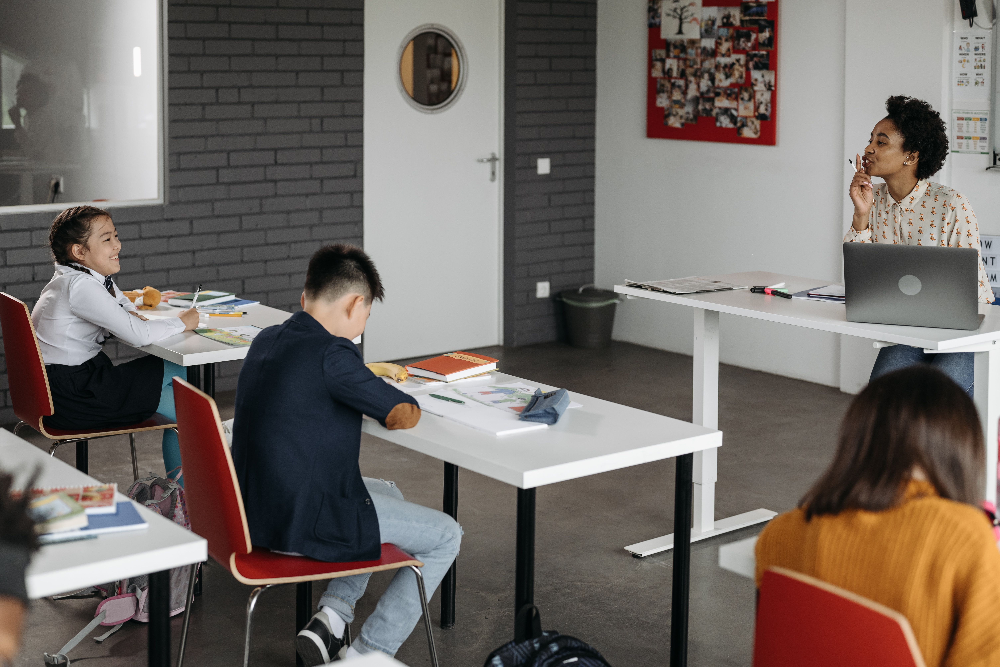
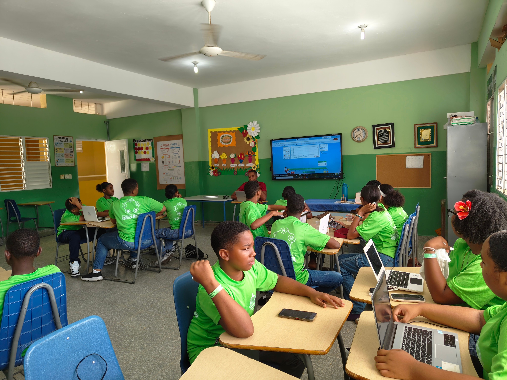

What is a school?
A place to study?
OR SOMETHING MORE?
Imagine a school built for the future.
Not just walls and desks.
An ecosystem of ideas.

Learning shouldn't feel like an obligation.
IT SHOULD FEEL LIKE DISCOVERY.
Technology shouldn't replace teachers.
It should give us new ways to see the world.
AI ASSIST
IMMERSIVE VR
GLOBAL LINK

Because we are more than grades.
PASSION.
MOVEMENT.
CONNECTION.
This is the school I imagine.
Where we don't just learn about the world.
WE LEARN HOW TO CHANGE IT.
But...
Is this reality?
WAKE UP.
It was just a dream.